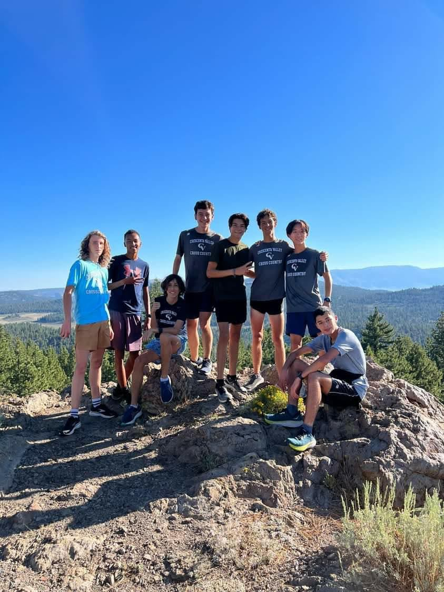
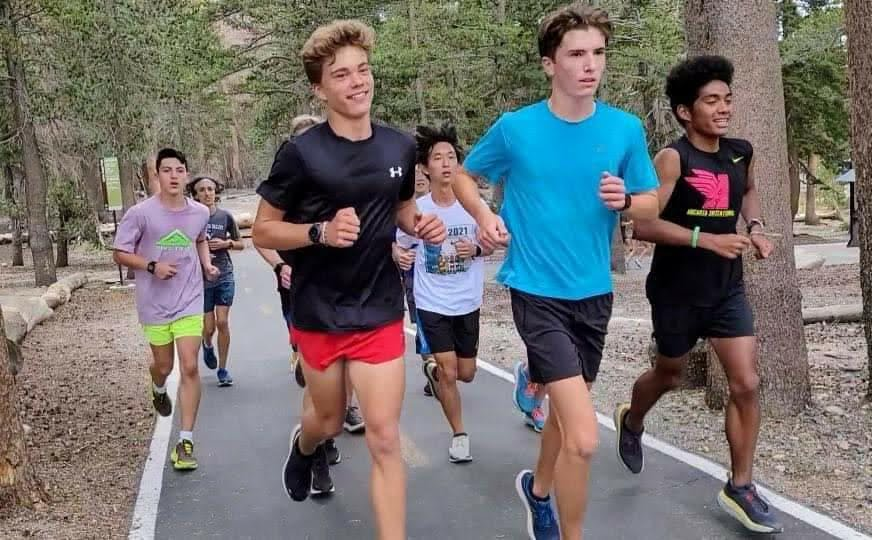
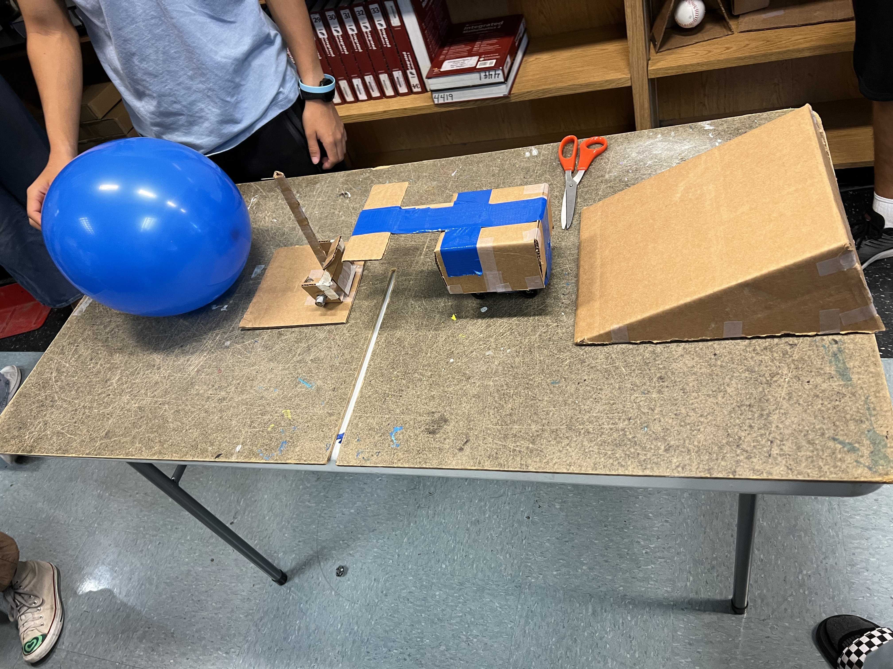
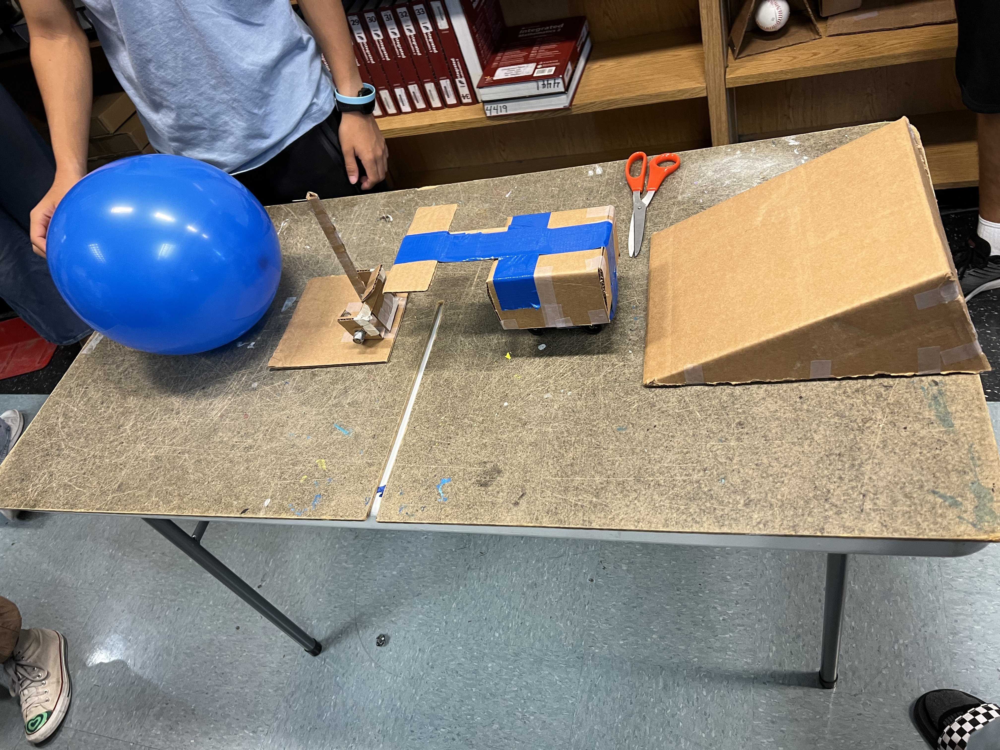

Nathan's Website
Welcome!


.jpg)
.jpg)

Engineering Journal
*8/29/2022 - 9/2/2022*

This week we learned how to use tinkercad. We discussed what a Rude-Goldberg machine is and how our 1st project will be about one. We also made a CAD of a household item for our challenge. I made a ricecooker.
*9/5/2022 - 9/9/2022*

This week we worked on our CADs for the Rude-Goldberg machine. We came up with two different ideas, involving a car(wheel and axle), a inclined plane, and a rod.
*9/12/2022 - 9/16/2022*

This week we worked on building our Rude-Goldberg machines out of cardboard based on our CADs. We first drew the outlines on a piece of cardboard, and then cut them out with a boxcutter. On Friday, we made paper boats and put weights on them to see how long they floated in water.
*9/19/2022 - 9/23/2022*
 

This week we finished our Rude-Goldberg machines. We tested them on friday. At first our machine didn't work, so we made the lever stand more upright to minimize the backwards force, and made the ram on the car wider to guarantee it hitting the lever even if it doesn't go straight. Our machine successfully popped the balloon on our second attempt.